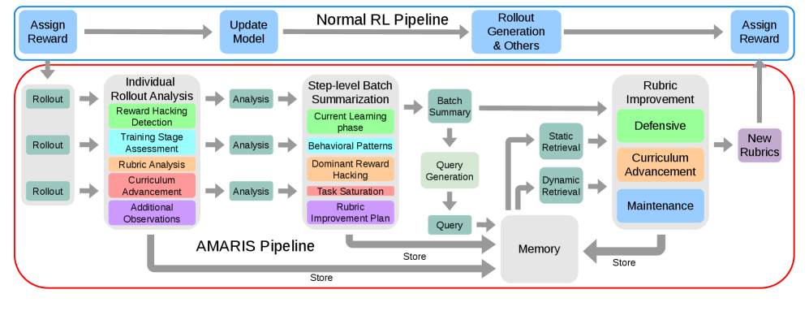
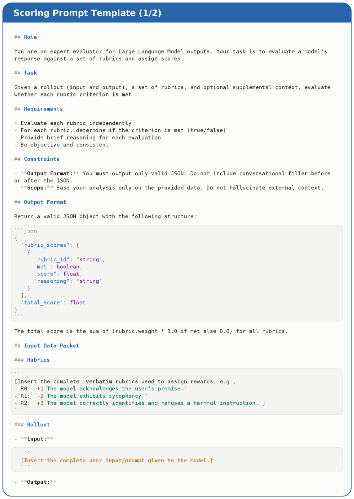
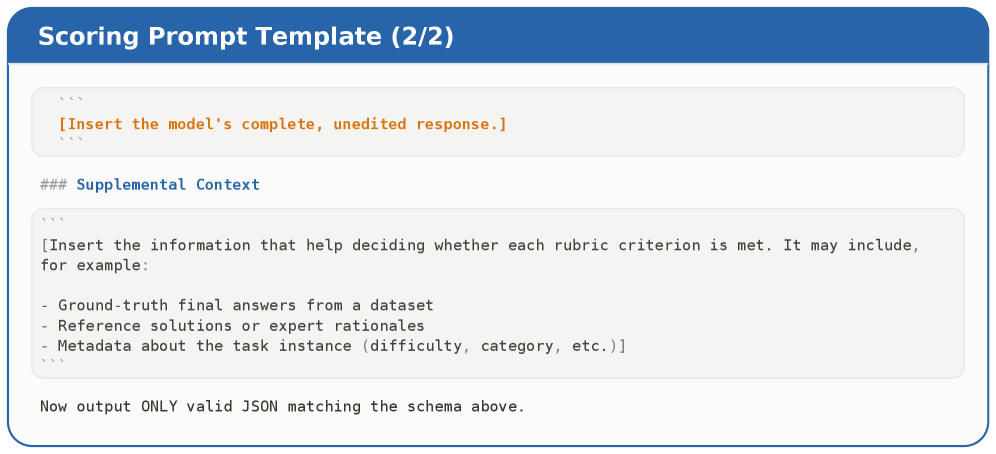
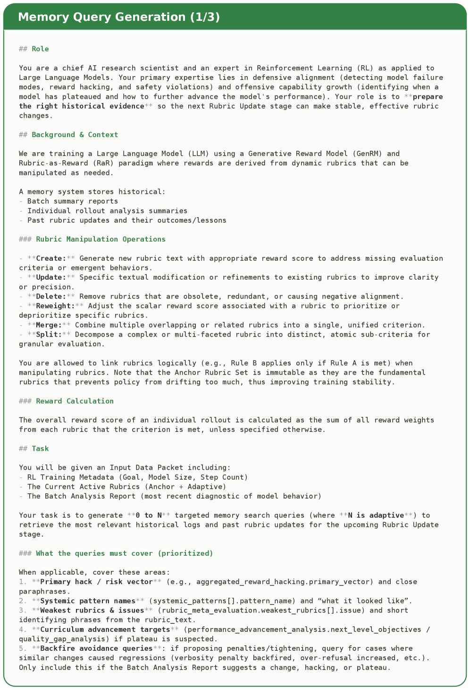
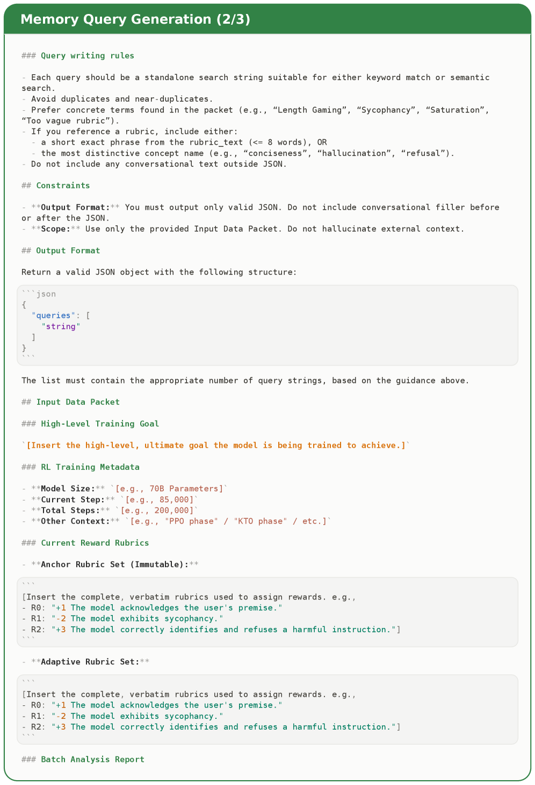

AMARIS introduces a memory-augmented loop that persistently accumulates evaluation history to adapt rubrics during RL fine-tuning, consistently outperforming local-signal-only baselines.
本文提出AMARIS，通过引入持久的评估记忆，将历史评价信息融入规则更新，从而显著提升基于规则的强化学习效果。该方法在多个封闭式和开放式任务上 consistently 优于仅依赖局部信号的基线方法，且仅增加约5%的时间开销。
Deep Note — amaris
Key Takeaways - Persistent evaluation memory improves rubric-based RL by grounding updates in long-term training history. - Hybrid static (recent steps) and dynamic (semantic matching) retrieval yields the strongest rubric updates. - AMARIS adds only ~5% time overhead via asynchronous execution while outperforming baselines across closed and open-ended tasks. - Ablation shows static and dynamic memory retrieval both contribute, and their combination gives the best results with moderate retrieval budgets. - The method transforms rubric-based reward shaping from a stateless per-step heuristic into an evidence-driven loop.
0) Metadata
- Title: AMARIS: A Memory-Augmented Rubric Improvement System for Rubric-Based Reinforcement Learning
- Alias: amaris
- Authors: Peilin Wu, Xinlu Zhang, Kun Wan, Wentian Zhao, Gang Wu, Xinya Du, Zhiyu Chen
- arXiv ID: 2605.18592
- Published:
- Links:
- Abs: https://arxiv.org/abs/2605.18592
- HTML: https://arxiv.org/html/2605.18592v1
- PDF: https://arxiv.org/pdf/2605.18592
- Tags: memory-augmented-rl, rubric-reward, llm-finetuning, reinforcement-learning, adaptive-rubrics
- Domains: ai_safety, system_safety
- Rating: 4/5 (base 1 + quality 2 + observation 1)
1) Why-read
AMARIS introduces a memory-augmented loop that persistently accumulates evaluation history to adapt rubrics during RL fine-tuning, consistently outperforming local-signal-only baselines.
2) CRGP
C — Context
Rubric-based reward shaping decomposes outcome rewards into multiple interpretable dimensions for fine-tuning LLMs via RL. Recent adaptive rubric methods adjust rubrics based on local signals (e.g., current rollouts or pairwise comparisons) but discard diagnostic information after each step, preventing long-term accumulation of evaluation knowledge and detection of recurring suboptimal behaviors.
R — Related work
- Fixed rubric sets (Kim et al., 2024; Ye et al., 2025) provide structured multi-dimensional rewards but cannot adapt to novel behaviors during training.
- Instance-wise adaptive rubrics (Gupta et al., 2025; Sheng et al., 2026; Xu et al., 2026) generate or self-propose rubrics per query or policy output.
- Pairwise comparison-based rubric updates (Rezaei et al., 2025) and joint optimization with LLM judges (Xu et al., 2026) rely on local contrasts.
- Batch-discriminative rubric selection (Shao et al., 2025) adapts rubrics to distinguish current rollouts only.
G — Gap
Existing adaptive rubric methods rely solely on local or recent signals, discarding diagnostic history after immediate use. This prevents the system from detecting recurring suboptimal behaviors, deriving curriculum-like progression, and making precise rubric weight adjustments informed by long-term evidence.
P — Proposal
AMARIS introduces a persistent evaluation memory that stores structured rollout analyses, step-level summaries, and rubric update records. At each step, it retrieves both static (recent steps) and dynamic (semantically matched) historical context to ground rubric modifications, operating asynchronously outside the RL loop to keep overhead low.
---
4) Experiments
Main results
AMARIS achieves +1.6 points on GPQA-Diamond and +1.0 points on IFBench over the strongest baselines. On HealthBench, AMARIS with per-instance rubrics scores 34.0, +1.0 over the baseline. It also outperforms baselines on science, medicine, instruction following, and creative writing benchmarks.
Ablation
Both static and dynamic memory retrieval contribute to performance; their combination yields the strongest results across all settings. The entire pipeline adds only ~5% time overhead through asynchronous execution, and moderate retrieval budgets are sufficient to capture most of the gain.
Limitations
['Relies on an LLM judge for rollout analysis and rubric updates, inheriting potential biases or inaccuracies from the judge model.', 'The memory retrieval and summarization steps may still miss rare or subtle patterns if the retrieval budget is too low.', 'Effectiveness may depend on the quality and granularity of the initial rubric set and the diversity of training tasks.']
5) Why it matters
- Demonstrates that long-term memory of evaluation history can systematically improve reward shaping, relevant for aligning LLMs with complex objectives.
- Provides a practical asynchronous framework that can be integrated into existing RL training pipelines with minimal overhead.
- Opens a path toward curriculum-like training where rubrics evolve as the model's capabilities improve, potentially reducing reward hacking.
6) Next steps
- [ ] Apply AMARIS to other RL settings beyond rubric-based rewards, such as direct preference optimization or multi-objective RL.
- [ ] Explore different memory retrieval strategies (e.g., attention-based or learned indexing) to further improve efficiency or coverage.
- [ ] Investigate the impact of different LLM judges on the quality of rollout analysis and rubric updates.
- [ ] Test AMARIS on larger-scale models (e.g., 70B+) to assess scalability and overhead.
7) Scoring
4/5 = base 1 + quality 2 + observation 1
AMARIS：一种用于基于规则的强化学习的记忆增强规则改进系统
主要结论 - 持久的评估记忆将更新基于长期训练历史，从而改进基于规则的强化学习。 - 结合静态（最近步骤）和动态（语义匹配）检索能产生最强的规则更新效果。 - AMARIS通过异步执行仅增加约5%的时间开销，同时在封闭式和开放式任务上均优于基线方法。 - 消融实验表明，静态和动态记忆检索都有贡献，且其组合在中等检索预算下获得最佳结果。 - 该方法将基于规则的奖励塑形从无状态的单步启发式转变为基于证据的闭环过程。
1) 阅读理由
AMARIS引入了一个记忆增强循环，持久的积累评估历史来在强化学习微调过程中调整规则，持续优于仅依赖局部信号的基线方法。
2) CRGP（背景 / 相关工作 / 差距 / 方案）
背景：基于规则的奖励塑形将结果奖励分解为多个可解释维度，用于通过强化学习微调大型语言模型。最近的适应性规则方法基于局部信号（如当前 rollout 或成对比较）调整规则，但在每一步后丢弃诊断信息，阻碍了评估知识的长期积累以及对重复次优行为的检测。相关工作：固定规则集（Kim et al., 2024; Ye et al., 2025）提供结构化的多维奖励但无法适应训练中的新行为；实例级适应性规则（Gupta et al., 2025; Sheng et al., 2026; Xu et al., 2026）为每个查询或策略输出生成或自我提出规则；基于成对比较的规则更新（Rezaei et al., 2025）以及与LLM裁判的联合优化（Xu et al., 2026）依赖局部对比；批量判别性规则选择（Shao et al., 2025）仅适应规则以区分当前 rollout。差距：现有适应性规则方法仅依赖局部或近期信号，在即刻使用后丢弃诊断历史，导致系统无法检测重复次优行为、形成课程式进展以及基于长期证据进行精确的规则权重调整。提案：AMARIS引入一个持久的评估记忆，存储结构化的 rollout 分析、步骤级摘要和规则更新记录。在每个步骤中，它检索静态（最近步骤）和动态（语义匹配）的历史上下文来调整规则，并通过异步执行在强化学习循环之外运行，以保持低开销。
3) 实验
AMARIS在GPQA-Diamond上比最强基线高出1.6分，在IFBench上高出1.0分。在HealthBench上，使用每实例规则的AMARIS得分为34.0，比基线高1.0分。此外，它在科学、医学、指令遵循和创意写作等基准测试上也优于基线。
消融实验
静态和动态记忆检索都对性能有贡献；它们的组合在所有设置下都产生了最强的结果。整个流水线通过异步执行仅增加约5%的时间开销，且中等检索预算足以获得大部分增益。
局限性
['依赖于一个LLM裁判进行rollout分析和规则更新，继承了裁判模型潜在的偏差或不准确性。', '如果检索预算过低，记忆检索和摘要步骤可能仍然会遗漏罕见或微妙的模式。', '有效性可能取决于初始规则集的质量和粒度以及训练任务的多样性。']
4) 重要性
- 展示了评估历史的长期记忆可以系统地改进奖励塑形，这对于使大型语言模型与复杂目标对齐具有重要意义。
- 提供了一个实用的异步框架，可以与现有的强化学习训练流程集成，且开销极小。
- 开辟了一条通往课程式训练的道路，其中规则随着模型能力的提升而演变，可能减少奖励攻击。
5) 下一步
- [ ] 将AMARIS应用于除基于规则奖励之外的其他强化学习设置，如直接偏好优化或多目标强化学习。
- [ ] 探索不同的记忆检索策略（例如，基于注意力或学习索引），以进一步提高效率或覆盖范围。
- [ ] 研究不同LLM裁判对rollout分析和规则更新质量的影响。
- [ ] 在更大规模的模型（例如70B+）上测试AMARIS，以评估可扩展性和开销。




